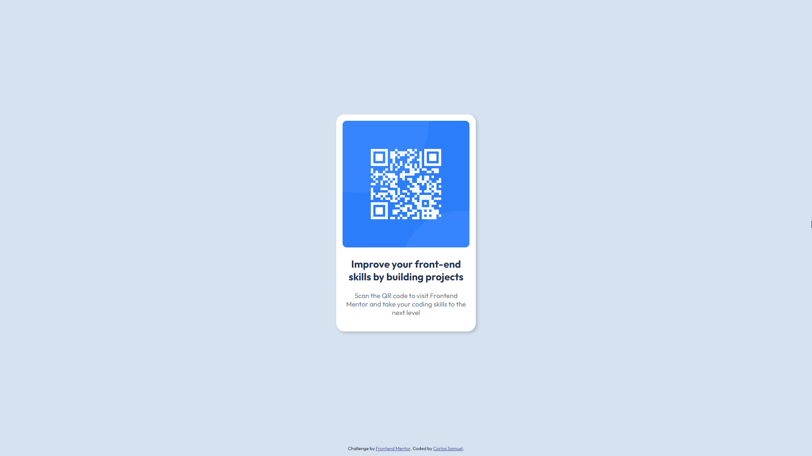
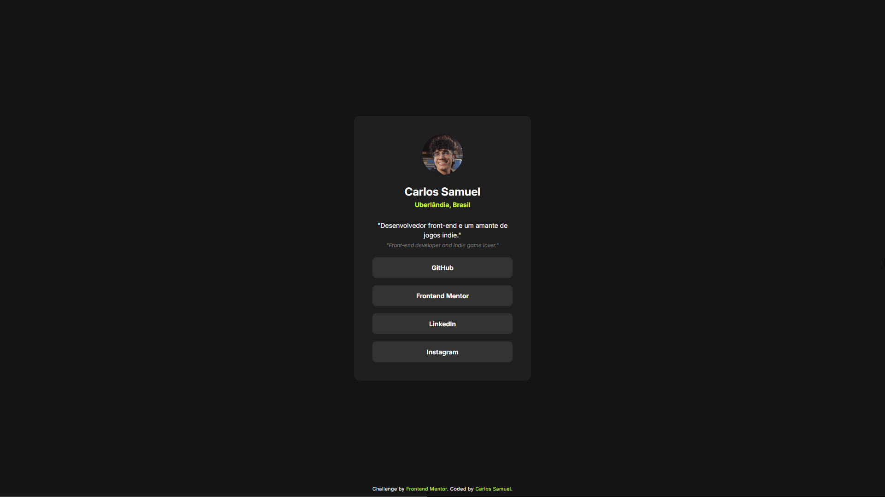

Frontend Mentor - Desafios
Frontend Mentor - Challenges
<p> Oi, tudo bem? </p>
<p class="english"> Hey, what's up? </p>
Aqui você encontrará todo meu avanço nos desafios do Frontend Mentor, explicados e separados por dificuldade:
Here you will find all my advancement in the Frontend Mentor's challenges, explained and separated by difficulty:
GitHub Repo: https://github.com/Crtykwod/Frontend-Mentor
#1 - Newbie -- 6 challenges completed
-
QR Code Challenge
Esse desafio consistiu em criar um card simples e colocar uma imagem de QR Code dentro dele, foi um exercício introdutório que me ajudou a entender melhor alguns conceitos de
display: flex;This challenge consisted of creating a simple card and placing a QR Code image inside it. It was an introductory exercise that helped me better understand some concepts of
display: flex;Click Here to see the solution on Frontend Mentor
-
Blog Preview Challenge

Esse desafio foi basicamente o mesmo do anterior, a diferença é que nesse eu deveria mudar a cor do título quando passase com o mouse sobre ele, para isso usei
:hover. Aproveitei e aprendi um pouco mais sobredisplay: grid;, tanto que foi isso que usei para centralizar o card.This challenge was basically the same as the previous one, the difference is that in this one I had to change the color of the title when I hovered over it with the mouse, for that I used
:hover. Also, I took some time and learned a bit more aboutdisplay: grid;, so that's what I used to center the card.Click Here to see the solution on Frontend Mentor
-
Social Links Profile Challenge
Nesse desafio, eu precisei precisar inserir uma foto redonda, para isso usei
border-radius: 50%;e funcionou perfeitamente. Também precisei colocar minhas redes sociais dentro de caixas que alteravam a cor quando eu passava o mouse em cima.In this challenge, i needed to insert a rounded image, to do it, I used
border-radius: 50%;and it worked perfectly. I also needed to place my social media inside boxes that change the color when you hover the mouse over it.Click here to see the solution on Frontend Mentor
-
Recipe Page Challenge

Aqui, eu precisei usar
@mediapara definir um layout diferente para tamanhos diferentes de dispositivos, além disso, o desafio focou bastante nas tags semânticas de HTML, como<header><main>e<footer>Here, I needed to use
@mediato define a different layout for different device sizes, in addition, the challenge focused a lot on semantic HTML tags, such as<header><main>and<footer>Click Here to see the solution on Frontend Mentor
-
Product Preview Challenge

Esse desafio se baseou em
@media. O objetivo era criar dois cards, um para versão mobile e outro para desktop, para isso usei a aproximação mobile-first.This challenge was based on
@media. The objective was to create two cards, one for the mobile version and the other for the desktop, for this I used the mobile-first approach.Click Here to see the solution on Frontend Mentor
-
Four Cards Challenge

Aqui, eu precisei desenvolver mais os meus conhecimentos de
display:grid;e principalmente de@mediapara criar um layout responsivo com os cards.Here, I needed to further develop my knowledge of
display:grid;and especially@mediato create a responsive layout with the cards.Click Here to see the solution on Frontend Mentor
#2 - Junior -- 0 challenges completed
-
> Ainda nada aqui...
> Still nothing here...
#3 - Intermediate -- 0 challenges completed
-
> Ainda nada aqui...
> Still nothing here...
#4 - Advanced -- 0 challenges completed
-
> Ainda nada aqui...
> Still nothing here...